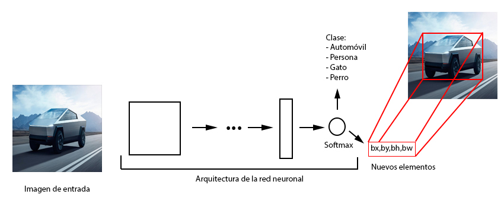

Motivación
En el ámbito técnico, realizar cambios de configuración es una actividad que debería demandar solamente la atención del técnico que la realiza, para lograr eso es necesario primeramente información relevante, actualizada, confiable, completa y objetiva.En muchas empresas, la calidad de la información sigue siendo un desafío, a pesar de ser crucial para el éxito de cualquier proyecto. La falta de datos claros y precisos puede influir directamente en los resultados.
Este sistema surge de una necesidad personal, basada en mi experiencia laboral al identificar las fallas comunes en estas actividades. Además, integra conocimientos sobre sistemas de información, herramientas clave en las empresas actuales, que no solo permiten cumplir objetivos, sino también proyectarse estratégicamente hacia el futuro para destacar frente a la competencia.
Introducción
La aplicación pretende fijar procedimientos que se adapten al entorno de trabajo, con la finalidad de responder a cambios de configuración de manera eficaz en el menor tiempo posible. La herramienta fue diseñada para auxiliar al técnico a realizar los cambios de configuración en cada molde que lo requiera, aunque la base de la aplicación puede ser aplicada en actividades similares, por lo que esta libreta pretende ilustrar la arquitectura del software y hardware necesaria para lograr dicho objetivo.
Estructura de la Aplicación
Un molde de inyección de plástico está compuesto por múltiples elementos, y para realizar cambios en su configuración es necesario intercambiar dichos elementos, con el fin de obtener una forma diferente en el producto final.El proceso para realizar estos cambios se lleva a cabo de la siguiente manera:
Cada molde se identifica mediante un número único, compuesto por dos cifras iniciales, un guion, y un número de siete cifras que conforma el identificador completo del molde.
Ejemplos de sintaxis:
- (21-1234567)
- (20-2345678)
- (19-4224674)
Introducción de nuevos elementos
Para comprender el funcionamiento de la arquitectura de red neuronal YOLO, debo introducir nuevos elementos ya que
ahora la tarea no es solo clasificar el objeto, el algoritmo también debe decirnos donde se encuentra el objeto encerrando su posición en un rectángulo es decir,
clasificar, localizar y señalar el objeto.
Les presentaré nuevas variables que formaran parte de la arquitectura, estas variables son importantes, ya que están directamente relacionadas con la posición
del objeto que detectemos en la imagen.

Como podrán ver, en la imagen he representado la arquitectura de una red neuronal convolucional para clasificar objetos de manera simplificada, donde podemos ver que el algoritmo clasifica 4 clases de objetos: automóviles, personas, gatos y perros. Como les dije antes no solo queremos clasificar también es importante localizar. Para esta tarea se han añadido 4 nuevas variables que se encargaran de localizar el objeto clasificado.Estas serán las responsables de señalar mediante un rectángulo la posición el objeto.

Para lograr todo esto que acabo de decir, se necesitara un algoritmo muy poderoso que funciona de maravilla en tiempo real, llamado "YOLO" durante el resto de este documento veremos su funcionamiento y aplicación en diferentes objetos.
Nueva salida
En el ejemplo podemos observar el formato de la etiqueta junto con los valores que lleva almacenados, en esta ocasión la etiqueta muestra en la imagen un caso en particular: cuando se ha encontrado un objeto. El objeto encontrado es el "cybertruck" y el nuevo formato de salida a diferencia del proceso de clasificación convencional es este vector de tamaño 8 en el que se observan las clases, las coordenadas de la posición- dimensión de la caja y un indicador que marca 1 en el caso en el que se encontró un objeto en la imagen.El algoritmo yolo trajo consigo una serie de mejoras y medicaciones en la arquitectura de red, que aunque podría decirse que son algo sutiles, son también increíblemente eficientes para el análisis de imágenes. Uno de los problemas que les toco abordar durante el desarrollo fue la sobre posición de objetos en una misma imagen, para lo que desarrollaron una técnica llamada "anchor boxes". Que consiste en verificar sobre la misma celda el número de objetos y para cada uno guardar en el vector de salida su posición, podría verse como tener dos plantillas una para objetos horizontales digamos un auto (a lo largo) y otra para verticales (una persona parada) y si en la misma imagen detecta dos objetos en la plantilla para verticales guarda a la persona y en la horizontal guarda el auto, pero ya no sería un vector como el de la imagen superior de 8 renglones, ahora serian 16 si tenemos definidas 2 cajas o 24 si tenemos definidas 3, etc.
Arquitectura
El éxito de yolo se debe principalmente a la forma en la que procesa la imagen, cuando recibe una entrada yolo proyecta una rejilla sobre esta, en el ejemplo que les pondré la rejilla tendrá tamaño 3x3, en realidad nunca son de ese tamaño pero resulta sencillo explicarlo de esa manera. Como resultado de la proyección obtenemos 9 rejillas es entonces cuando entra nuestro algoritmo de clasificación y detección para cada una de ellas, se verifica si contiene una imagen y se le asigna el vector etiqueta con las 8 variables a cada una de las celdas, en las que el vector para cada una puede ser diferente, ya que en algunas va a detectar un objeto marcando con 1 cuando es así, y en otras no encontrara nada por lo que marcara con 0 dichas etiquetas.Debo aclarar que el tamaño del vector que se le asigna a cada una de las celdas va a depender del número de clases que se tengan, en nuestro caso son solo 3 pero pueden ser más, y del número de "anchor boxes" que se utilicen (en este caso solo 1). En la parte inferior de la imagen podemos ver un pequeño ejemplo de la arquitectura que yolo plantea, donde podemos ver que la salida lo que les comentaba sobre el vector etiqueta la salida será un volumen de 3x3x8. El entrenamiento se realiza través del proceso de convolución (conv- maxpool) donde al final llegamos a nuestro volumen de la rejilla. La gran ventaja de esta arquitectura es que el resultado nos da bastante precisión en los bounding boxes (las cajas que encierran al objeto) además claro, decirnos si hay algo y que es lo que se identificó.
En la imagen, la arquitectura descrita por la publicación de Joseph Raymond y compañía, donde observamos que a pesar de ser bastante poderosa no deja de ser sencilla para su interpretación (la organización de las capas conv-max es parecida a la de la explicación sobre clasificación que les puse en la publicación pasada)
Código
El código siguiente es una ilustración sobre la definición de las capas en este tipo de algoritmos.
Donde podrían rescatar la definición del tamaño de filtro para la convolución, el número de filtros que se aplican, el tamaño con el que avanzara el filtro, si contiene padding o no, el nombre de la capa, la función de activación y el tamaño del filtro de max pooling. (no son todas las capas es solo un ejemplo de algunas)
Capas
# Capa 1
x = Conv2D(32, (3,3), strides=(1,1), padding='same', name='conv_1', use_bias=False)(imagen_entrada)
x = BatchNormalization(name='norm_1')(x)
x = LeakyReLU(alpha=0.1)(x)
x = MaxPooling2D(pool_size=(2, 2))(x)
# Capa 2
x = Conv2D(64, (3,3), strides=(1,1), padding='same', name='conv_2', use_bias=False)(x)
x = BatchNormalization(name='norm_2')(x)
x = LeakyReLU(alpha=0.1)(x)
x = MaxPooling2D(pool_size=(2, 2))(x)
# Capa 3
x = Conv2D(128, (3,3), strides=(1,1), padding='same', name='conv_3', use_bias=False)(x)
x = BatchNormalization(name='norm_3')(x)
x = LeakyReLU(alpha=0.1)(x)
# Capa 4
x = Conv2D(64, (1,1), strides=(1,1), padding='same', name='conv_4', use_bias=False)(x)
x = BatchNormalization(name='norm_4')(x)
x = LeakyReLU(alpha=0.1)(x)
Resultados
Estos son algunos de los resultados en video de la aplicación de yolo, algo interesante es que podemos nosotros hacer una modificación para que el algoritmo detecte los objetos que nosotros queramos, podría ser una gran base para desarrollar un proyecto para una empresa como en el aspecto de vigilancia o en la industria donde se debe controlar cierto resultado de un proceso (que de hecho esa es mi tirada, cuando tenga algo de eso lo subiré por aquí).